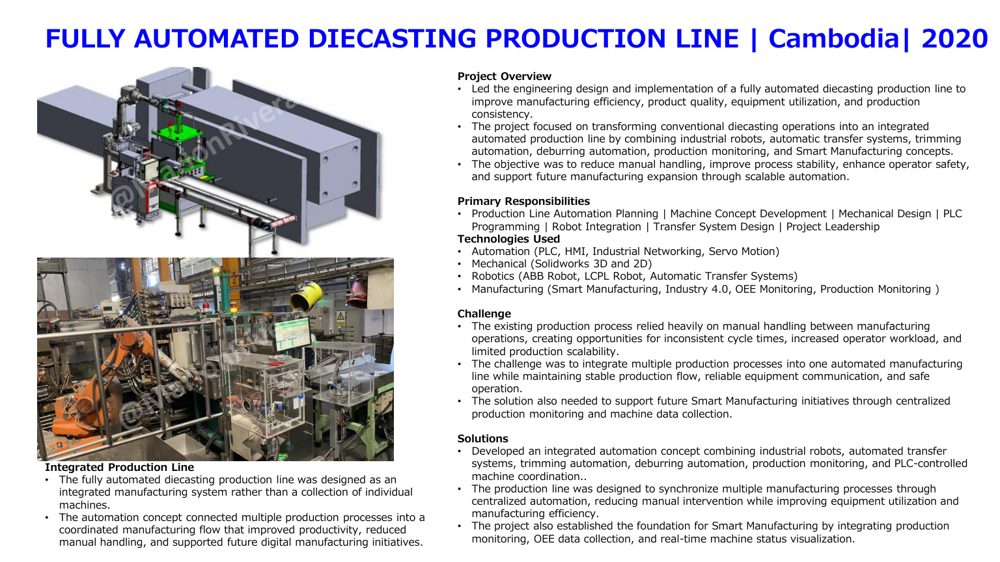

← Back to projects
Robotics • Cambodia • 2020
Fully Automated Diecasting Production Line
Integrated robots, transfer systems, trimming, deburring and monitoring into one coordinated line.
PLC/HMIIndustrial networkingServo motionSolidWorksABB robotLCPL robotOEE monitoring

Overview
Engineering context
Led engineering design and implementation of a fully integrated diecasting line combining robots, automated transfer, trimming, deburring and smart-factory monitoring.
Responsibilities
My contribution
Line planning, machine concept, mechanical design, PLC programming, robot integration, transfer-system design and project leadership.
Challenge
What needed to be solved
Integrate multiple processes while maintaining stable flow, communication, safety and scalability.
Solution
Engineering approach
Developed centralized machine coordination and a foundation for real-time monitoring, OEE collection and future expansion.
Impact
Project outcomes
- Reduced manual handling
- Improved process synchronization
- Improved production visibility
- Enabled Smart Manufacturing expansion